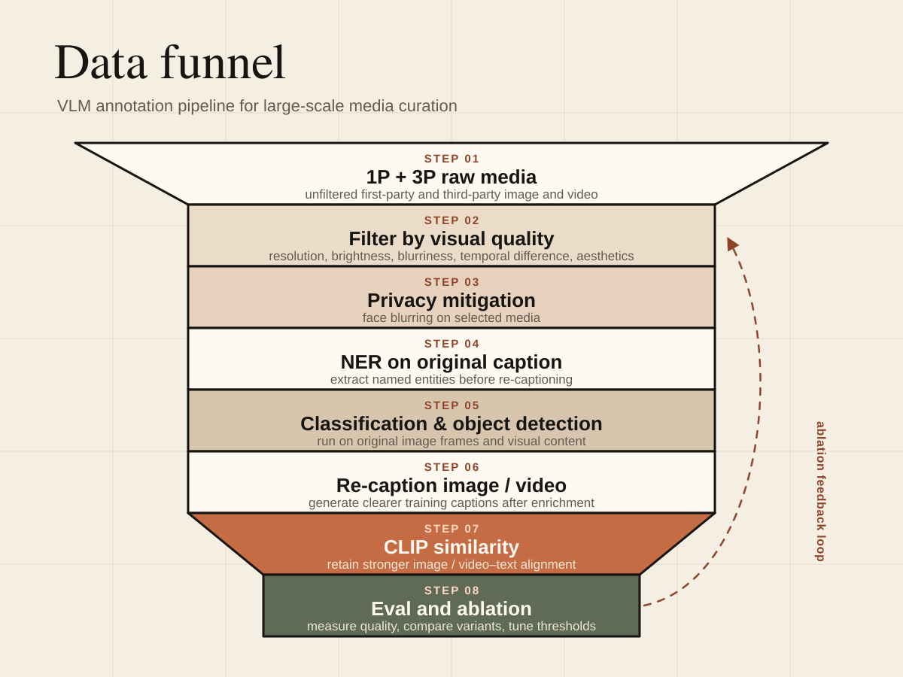

VLM related / Project 01
Large-Scale Image and Video Annotation Pipeline
Designed a high-throughput annotation and filtering pipeline to curate image and video data for a VLM deployed on smart glasses, enabling concise, high-fidelity answers to visual queries.
The work focused on turning raw, heterogeneous web and internal media into high-value training examples while respecting privacy and quality constraints.
Technical emphasis
The system coordinated concurrent GPU inference with high throughput data loading and writing, then composed multiple model passes into a repeatable enrichment graph.
Pipeline stages
- Start from first-party and third-party raw media.
- Filter by visual quality: resolution, brightness, blurriness, temporal difference, aesthetics, and related signals.
- Apply privacy mitigation through face blurring.
- Run named entity recognition on original captions.
- Run classification and object detection on original images.
- Re-caption images and videos.
- Score CLIP similarity.
- Evaluate quality and run ablations.